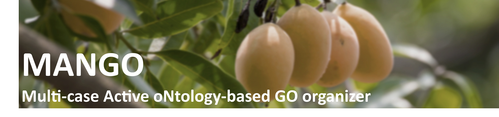

MANGO
MANGO is an R package for Gene Ontology (GO) Biological Process (BP) enrichment analysis that helps reduce redundancy and improve interpretability of top-ranked results. Instead of reporting long lists of highly overlapping terms, MANGO restructures enriched terms into ontology-guided term trees using the GO DAG, enabling compact summaries of biological signals.
This release provides the following key features:
Ontology-based structuring to reduce redundant top terms:
MANGO reorganizes enriched BP terms into tree-structured groups based on GO hierarchy and term relationships, helping prevent near-duplicate terms from dominating the top ranks.Active-tree filtering to suppress structural false positives:
Because GO is hierarchical, significant-looking terms can appear due to dependency rather than true signal. MANGO defines and filters “active trees” using coverage/consistency criteria (e.g., hit-term count and hit ratio) to downweight structurally driven results.Single-case and multiple-case workflows:
MANGO supports both single-condition summaries and multiple-case designs by integrating enrichment outputs across conditions. This enables discovery of common vs condition-specific biological processes and facilitates trend/pattern interpretation across dose, time-course, or cohort comparisons.Visualization utilities for tree-level interpretation:
MANGO provides plotting functions to summarize active trees and term–gene relationships, including single- and multiple-case views for interpretation and reporting.Install: Install
Data Preprocessing & Analysis: Single case & Multiple case
Visualization: Single case & Multiple case